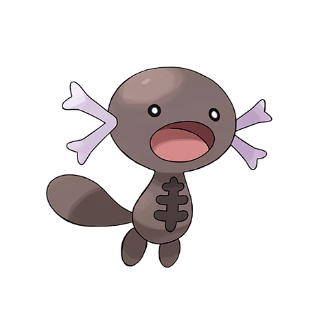

First introduced in Pokemon Gold & Silver, Wooper is the 194th Pokemon in the National Dex. And what a Pokemon it is! Please, check out its amazing features.
Two Exciting Flavors!
Wooper currently has two forms: the Johto form and the Paldea form. Let's look at both, shall we?

|
 |
Johto Wooper |
Paldea Wooper |
|
This type of Wooper is the most common between the two, being located in not only Johto, but also in Sinnoh, Galar and Kitakami. This Wooper is also a Water/Ground type.
Johtonian Woopers evolve into Quagsire at Level 20. |
This type of Wooper is only found in Paldea, where it is a very common first encounter for new Paldean trainers. This Wooper is a Poison/Ground type.
Paldean Woopers evolve into Clodsire at Level 20. |
Wooper Pokedex Entries

|
Johtonian Wooper Entries
Paldean Wooper Entries
|
Here's some more information about Woopers.
- Wooper